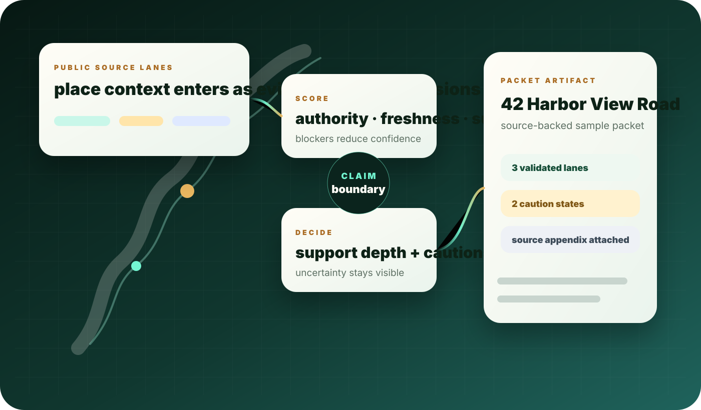
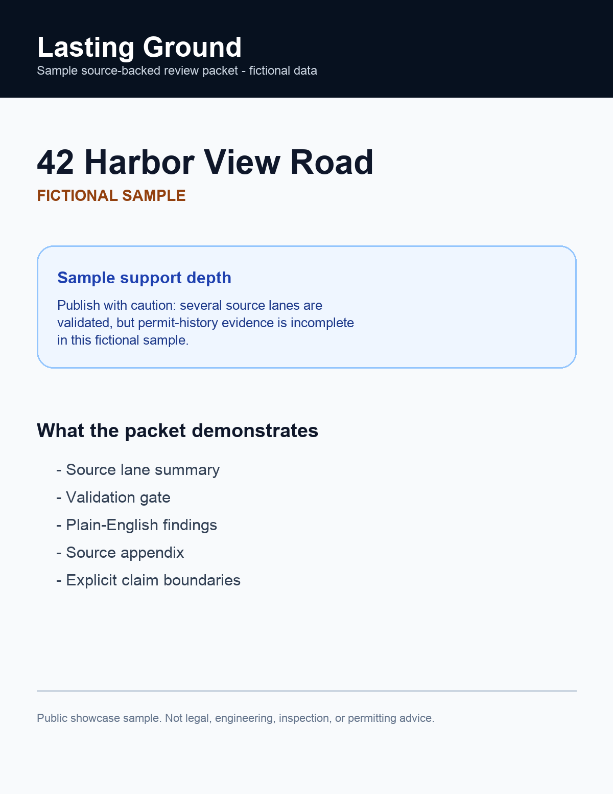

Evidence system
Public context, turned into a readable packet.
Lasting Ground organizes fragmented source context into evidence lanes, support-depth decisions, validation gates, packet sections, and a printable sample artifact.
System graphic
The packet is the final layer, not the whole system.
The visual path starts with public source lanes, then evidence scoring, support-depth decisions, visible cautions, and finally a readable artifact.

Sample artifact
A printable packet makes the system inspectable.
The sample PDF demonstrates the artifact shape: source lane summary, plain-English findings, validation gate, and source appendix.

Reviewable packet output
The output is designed to be read quickly while keeping source limits visible. It is not a claim machine; it is a structured translation layer around public context.
Interactive sample flow
Change the sample address and watch the validation state move.
This runnable demo uses sample address data. It shows artifact logic, claim boundaries, and packet structure in a reviewer-friendly form.
Decision records
The packet is governed by source boundaries.
Score evidence first
Packet language is downstream of authority, freshness, support, and blocker scoring.
Engineering proof
Public code paths behind the packet.
Packet composition
Turns validation output into readable packet sections with cautious language.
Source lane validation
Validates lane status and support depth before output language is composed.